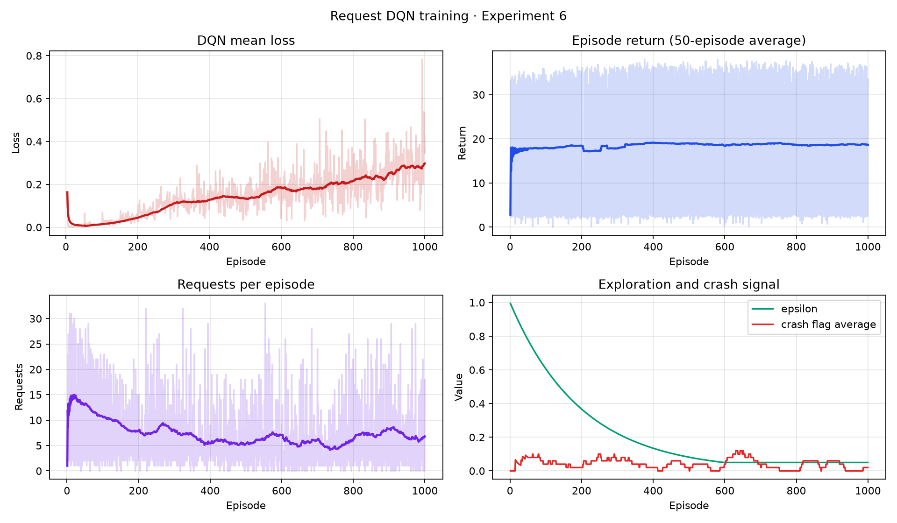
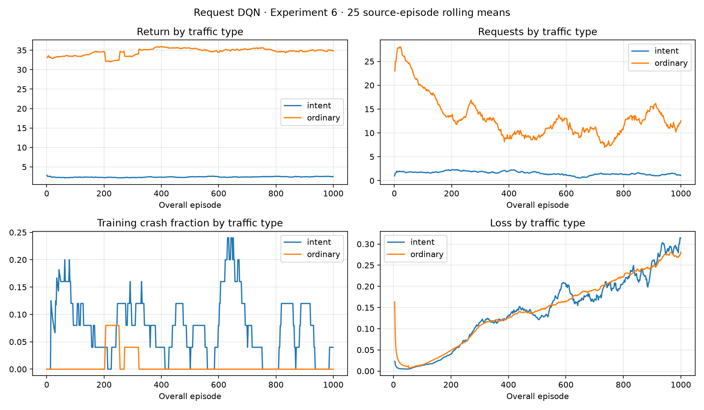
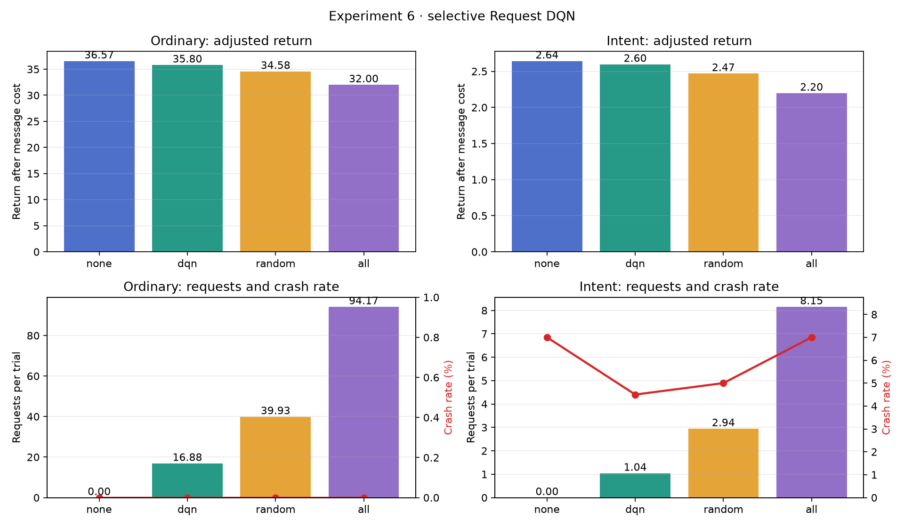

Experiment 6: Selective Request Learning
Experiment 6 asks a narrower question: can DQN5's excessive communication be reduced without losing the safety benefit of intent messages?
Current status: DQN6 with --comfort-ttc 6 is the best learned and safety-oriented complete policy so far. Asking nobody remains the best communication-cost-adjusted baseline.
Setup
- Reuse the frozen Experiment 5 stage-balanced world model.
- Train a new Request DQN for 1,000 episodes: 500 ordinary roads and 500 short paired-intent episodes.
- Preserve the fixed eight spatial request slots, public 45-value DQN state, three-step planner, and full safety guard.
- Store the new policy separately under Experiment 6.
Configuration
| Item | Value |
|---|---|
| Frozen world model | checkpoints/experiment_5/MLPx/intent_stage_best.pt |
| DQN episodes | 1,000 |
| Communication cost | 0.05 per request |
| Redundant-request penalty | 0.10 |
| Replay | Equal ordinary/intent sampling |
| Planner horizon | 3 |
| Training seeds | Ordinary 1000000+, intent 1100000+ |
| Evaluation seeds | Ordinary 1200000+, intent 1300000+ |
The new teacher signal compares the planner's action with the selected message against its action with no message. If the response changes nothing, that request receives an additional 0.10 training penalty. This comparison is used only to shape the training reward; the deployed DQN cannot see private intent.
Commands
.venv/bin/python -m scripts.training.train_request_dqn \
--experiment 6 --episodes 1000 --seed 0 \
--mlpx-checkpoint checkpoints/experiment_5/MLPx/intent_stage_best.pt \
--scenario-mix mixed --ordinary-seed 1000000 --challenge-seed 1100000 \
--request-state-encoding ego_control_v1 \
--communication-cost 0.05 --redundant-request-penalty 0.10 \
--safety-guard --max-target-speed 30 --lane-change-guard --batched-plannerThe ordinary and paired-intent evaluations use the same guard flags and explicit Experiment 5 world-model checkpoint. Their complete commands and settings are stored in the evaluation summaries listed under Artifacts.
Results
| Traffic set | Policy | Adjusted return | Driving reward | Requests | Crashes |
|---|---|---|---|---|---|
| 100 ordinary episodes | Ask nobody | 36.566 | 36.566 | 0.00 / episode | 0 / 100 |
| 100 ordinary episodes | DQN6 | 35.801 | 36.645 | 16.88 / episode | 0 / 100 |
| 200 intent trials | Ask nobody | 2.643 | 2.643 | 0.00 / trial | 14 / 200 |
| 200 intent trials | DQN6 | 2.597 | 2.649 | 1.04 / trial | 9 / 200 |
On the exact same fresh seeds, DQN6 improved over DQN5:
| Traffic set | DQN5 return | DQN6 return | DQN5 requests | DQN6 requests | DQN5 crashes | DQN6 crashes |
|---|---|---|---|---|---|---|
| Ordinary | 34.943 | 35.801 | 33.31 | 16.88 | 0 | 0 |
| Intent | 2.563 | 2.597 | 1.88 | 1.04 | 10 / 200 | 9 / 200 |
Graphs



Rendering
.venv/bin/python -m scripts.evaluation.render_request_dqn \
--experiment 6 --episodes 1 --seed 1200000 --delay 0.15 \
--safety-guard --max-target-speed 30 --lane-change-guard --comfort-ttc 6The renderer automatically loads DQN6 and its stored Experiment 5 world-model path. The overlay identifies requested vehicles, displays their exact replies, and reports safety-guard interventions.
Recorded DQN6 rollout
This recording uses the original Experiment 6 guard and is retained as the policy artifact produced with the DQN6 training/evaluation run. The smooth controller was added afterward and is benchmarked separately below.
Smooth controller follow-up
The optional --comfort-ttc 6 controller reacts before emergency braking, uses a safe lane only when it offers at least equal forward clearance, waits five decisions before another lane command, and blocks acceleration for three decisions after braking.
| 100 ordinary roads | Original guard | Smooth controller |
|---|---|---|
| Adjusted return | 35.801 | 35.748 |
| Driving reward | 36.645 | 36.407 |
| Mean speed | 27.527 m/s | 27.401 m/s |
| Completed lane changes | 171 | 240 |
| Requests | 16.88 | 13.17 |
| Crashes | 0 | 0 |
The smooth controller increased completed lane changes by 40% while changing adjusted return by only -0.053. On the same 200 intent trials it preserved the 4.5% crash rate (9/200), 1.04 requests per trial, and nearly identical return (2.594 versus 2.597).
Evaluation
- On ordinary roads, DQN6 and asking nobody both completed all 100 episodes without crashing. DQN6's messages cost 0.765 adjusted return on average; the paired bootstrap 95% interval for DQN6 minus none is [-0.916, -0.606].
- In paired-intent trials, DQN6 avoided five crashes that occurred under the no-request policy and introduced none. Its adjusted-return difference was -0.046, with a scene-clustered 95% interval of [-0.078, -0.012].
- DQN6 beat random and all-request baselines on adjusted return in both traffic sets.
- Against DQN5 on identical seeds, DQN6 approximately halved communication, improved adjusted return in both traffic sets, and avoided one additional intent crash.
- The teacher improved request selectivity and safety, but did not make communication cost-effective relative to asking nobody.
Final interpretation
Use DQN6 + the smooth controller for rendering, safety-oriented evaluation, and future development. Use ask nobody as the reward baseline that every future communication policy must beat after message costs.
Artifacts
- Checkpoint:
checkpoints/experiment_6/RequestDQN/best.pt - Resumable state:
checkpoints/experiment_6/RequestDQN/latest.pt - Training run:
results/experiment_6/RequestDQN/experiments/20261120_150538_request_dqn/ - Ordinary evaluation:
results/experiment_6/evaluation/selective_ordinary/ - Intent evaluation:
results/experiment_6/evaluation/selective_intent/ - Same-seed DQN5 ordinary comparison:
results/experiment_6/evaluation/dqn5_same_seed_ordinary/ - Same-seed DQN5 intent comparison:
results/experiment_6/evaluation/dqn5_same_seed_intent/ - Smooth-controller ordinary evaluation:
results/experiment_6/evaluation/controller_v3_ordinary/ - Smooth-controller intent evaluation:
results/experiment_6/evaluation/controller_v3_intent/
Notes
The increasing TD loss means the final checkpoint should not be described as fully converged. More episodes alone are unlikely to solve the remaining gap. The next useful experiment is a stronger teacher or validation-selected penalty sweep that suppresses ordinary-road requests while retaining the five avoided intent crashes.